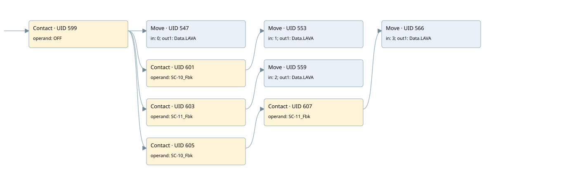

filter work
filter · 검색 색인 순서 7 · 원본 내부 NID 추정 6
백업 PLF 원본의 2729196 바이트 위치에서 복원한 XML. 검색 문서 1888의 객체 키 161022002e11000000000000와 연결했다. 이름 해석 13/13개. 남은 RefId는 상수 또는 미해석 참조다.
연결 구조 다시 그리기
원본 Part/PCon/Wire를 이용한 연결도다. TIA 화면의 래더 배치 또는 실행 결과를 재현한 그림은 아니다. 핀 연결은 아래 표와 원본 XML을 기준으로 읽는다. 노드 위에 마우스를 두면 피연산자 이름을 볼 수 있다.

접점·코일·블록과 피연산자
| Part UID | Gate | Negated 핀 | 연결 피연산자 |
|---|---|---|---|
| 599 | Contact | operand = OFF | |
| 547 | Move | in = 0; out1 = Data.LAVA | |
| 601 | Contact | operand = SC-10_Fbk | |
| 553 | Move | in = 1; out1 = Data.LAVA | |
| 603 | Contact | operand = SC-11_Fbk | |
| 559 | Move | in = 2; out1 = Data.LAVA | |
| 605 | Contact | operand = SC-10_Fbk | |
| 607 | Contact | operand = SC-11_Fbk | |
| 566 | Move | in = 3; out1 = Data.LAVA |
접점 경로를 펼친 조건식
Contact·O/A·비교기의 원본 연결을 읽기 쉽게 펼친 보조 해석이다. POWER는 전원 레일 시작을 뜻한다. 호출 블록·에지·타이머의 내부 동작과 다중 쓰기 순서는 이 표로 실행 검증하지 않았다. 미해석 핀과 RefId는 원문 연결표에서 확인한다.
| UID | 동작 | 대상 | 원본 접점 경로 | 내용 |
|---|---|---|---|---|
| 547 | Move | Data.LAVA | OFF | Move 입력 0 |
| 553 | Move | Data.LAVA | (OFF AND SC-10_Fbk) | Move 입력 1 |
| 559 | Move | Data.LAVA | (OFF AND SC-11_Fbk) | Move 입력 2 |
| 566 | Move | Data.LAVA | ((OFF AND SC-10_Fbk) AND SC-11_Fbk) | Move 입력 3 |
원본 배선 연결
| Wire UID | 동일 Wire 연결 끝점 |
|---|---|
| 609 | Powerrail {} ↔ Part 599.in |
| 582 | ORef 569 (OFF) ↔ Part 599.operand |
| 600 | Part 599.out ↔ Part 547.en ↔ Part 601.in ↔ Part 603.in ↔ Part 605.in |
| 583 | ORef 570 (0) ↔ Part 547.in |
| 584 | Part 547.out1 ↔ ORef 571 (Data.LAVA) |
| 585 | ORef 572 (SC-10_Fbk) ↔ Part 601.operand |
| 602 | Part 601.out ↔ Part 553.en |
| 587 | ORef 573 (1) ↔ Part 553.in |
| 588 | Part 553.out1 ↔ ORef 574 (Data.LAVA) |
| 589 | ORef 575 (SC-11_Fbk) ↔ Part 603.operand |
| 604 | Part 603.out ↔ Part 559.en |
| 591 | ORef 576 (2) ↔ Part 559.in |
| 592 | Part 559.out1 ↔ ORef 577 (Data.LAVA) |
| 593 | ORef 578 (SC-10_Fbk) ↔ Part 605.operand |
| 606 | Part 605.out ↔ Part 607.in |
| 594 | ORef 579 (SC-11_Fbk) ↔ Part 607.operand |
| 608 | Part 607.out ↔ Part 566.en |
| 596 | ORef 580 (3) ↔ Part 566.in |
| 597 | Part 566.out1 ↔ ORef 581 (Data.LAVA) |
식별자 해석 근거 13개
| ORef UID | RefId | 이름 | IdentXmlPart 파일 | 해석 방법 |
|---|---|---|---|---|
| 569 | 1 | OFF | 0594-IdentXmlPart.xml | UID/RID + search-text + NID agreement |
| 570 | 67 | 0 | 0597-IdentXmlPart.xml | literal candidate: UID/RID/NID + nearby named declarations + search-text agreement |
| 571 | 68 | Data.LAVA | 0596-IdentXmlPart.xml | UID/RID + search-text + NID agreement |
| 572 | 62 | SC-10_Fbk | 0594-IdentXmlPart.xml | UID/RID + search-text + NID agreement |
| 573 | 70 | 1 | 0597-IdentXmlPart.xml | literal candidate: UID/RID/NID + nearby named declarations + search-text agreement |
| 574 | 68 | Data.LAVA | 0596-IdentXmlPart.xml | UID/RID + search-text + NID agreement |
| 575 | 64 | SC-11_Fbk | 0594-IdentXmlPart.xml | UID/RID + search-text + NID agreement |
| 576 | 72 | 2 | 0597-IdentXmlPart.xml | literal candidate: UID/RID/NID + nearby named declarations + search-text agreement |
| 577 | 68 | Data.LAVA | 0596-IdentXmlPart.xml | UID/RID + search-text + NID agreement |
| 578 | 62 | SC-10_Fbk | 0594-IdentXmlPart.xml | UID/RID + search-text + NID agreement |
| 579 | 64 | SC-11_Fbk | 0594-IdentXmlPart.xml | UID/RID + search-text + NID agreement |
| 580 | 74 | 3 | 0597-IdentXmlPart.xml | literal candidate: UID/RID/NID + nearby named declarations + search-text agreement |
| 581 | 68 | Data.LAVA | 0596-IdentXmlPart.xml | UID/RID + search-text + NID agreement |
검색 코드 보조 자료
참조 명칭을 찾기 위한 자료이며 실행 순서나 AND/OR 관계는 위 연결표로 확인한다.
"off" move 0 "sc-10_fbk" move 1 "data".lava "sc-11_fbk" move 2 "data".lava "sc-10_fbk" "sc-11_fbk" move 3 "data".lava "data".lava